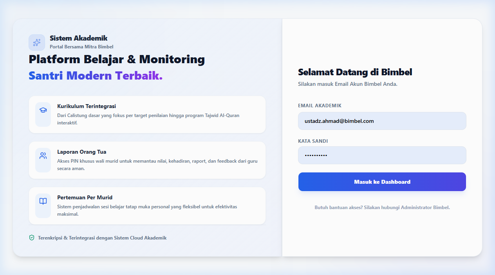
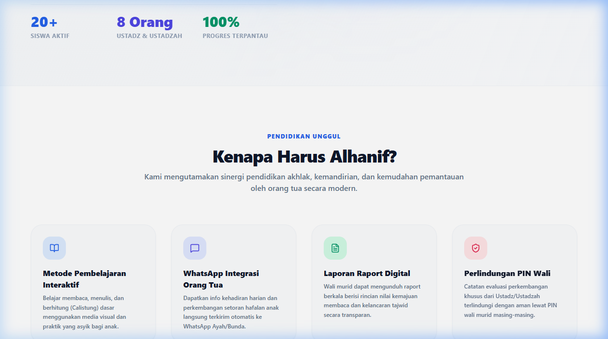
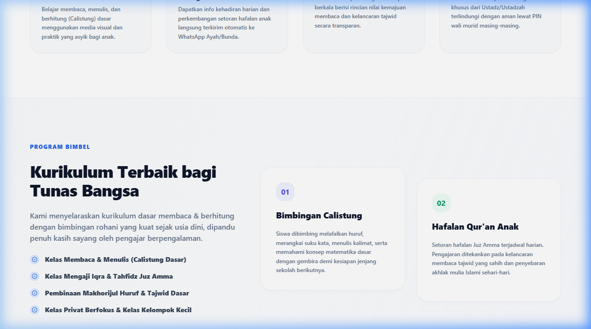

UAY Studio · Solusi Digital Rumah Sakit, Pendidikan & Ritel
Dari Pencatatan Manual
ke Sistem yang Berjalan Otomatis & Terukur.
Kami merancang ekosistem perangkat lunak B2B berkualitas produksi: menghubungkan portal pasien langsung ke SIMRS Khanza, mengotomasi pelaporan akademik via WhatsApp, serta mengamankan asesmen staf tanpa celah operasional.
UAY Studio membangun sistem digital yang disesuaikan dengan alur kerja spesifik industri—terutama fasilitas kesehatan rumah sakit, lembaga pendidikan, dan ritel terdistribusi. Kami berfokus pada keandalan sistem, integrasi backend yang mulus, dan kemudahan adopsi pengguna akhir.
Kecurangan ujian online via perpindahan tab/layar eksternal; rekap nilai makan waktu berhari-hari.
Digunakan
[ISI: harga]
HRIS Enterprise Vertikal Kesehatan & Korporat
Klinik, RS, sekolah swasta, institusi kerja
Presensi tidak valid, rekap cuti bertabrakan, dan proses hitung gaji memakan waktu.
[ISI: status]
[ISI: harga]
LMS & Academic Vertikal Pendidikan
Lembaga bimbel, madrasah, tahfidz, kursus
Pencatatan capaian harian tercecer; orang tua cemas karena tidak ada laporan langsung ke WhatsApp.
Digunakan
[ISI: harga]
Jajanden POS Vertikal Ritel / F&B
Franchise kuliner, kafe, multi-outlet UMKM
Kebocoran transaksi kasir manual, stok bahan tidak termonitor, dan laporan multi-cabang terpecah.
[ISI: status]
[ISI: harga]
Mengapa Bermitra dengan UAY Studio
1. Integrasi Langsung ke SIMRS Khanza
Kami memahami struktur database SIMRS Khanza, memungkinkan bridging data pasien, dokter, dan registrasi secara langsung tanpa perantara vendor lain.
2. White-Label & Kustomisasi Penuh
Sistem dapat mengadopsi identitas merek Anda seutuhnya (logo, domain RS/bimbel, seragam visual UI). [ISI: konfirmasi opsi source code].
3. Otomasi WhatsApp Gateway
Notifikasi jadwal, hasil asesmen, dan invoice SPP dikirim langsung ke WhatsApp penerima tanpa mewajibkan pengguna mengunduh aplikasi tambahan.
Legalitas & Tim IntiEntitas: [ISI: nama PT/CV/perorangan] · Penanggung Jawab Teknis: [ISI: nama, peran founder]
Pekanbaru, Riau — Indonesia
Punya Kebutuhan Sistem Khusus? Bangun Bersama UAY Studio
Selain produk siap pakai di atas, kami menerima pengembangan custom software dari tahap blueprint arsitektur hingga deployment di cloud/on-premise server Anda.
Platform digital komprehensif untuk pengelola bimbingan belajar, kursus, dan madrasah tahfidz. Mengotomasi rekap capaian belajar serta menghubungkan guru dengan wali murid secara real-time.
Fitur Fungsional Utama
Manajemen Siswa, Guru & Jadwal
Pengelompokan kelas otomatis, riwayat pendaftaran, pembagian sesi les, dan mutasi kelas secara rapi tanpa risiko data tercecer.
Notifikasi Otomatis WhatsApp Gateway
Setiap kali guru menyimpan presensi atau capaian harian, laporan langsung terkirim ke WhatsApp wali murid tanpa membuka aplikasi lain.
Pelacak Capaian Belajar & Hafalan
Merekam perkembangan hafalan surat, ayat, materi calistung, dan catatan perilaku harian secara visual dan terstruktur.
Billing SPP & Rekap Keuangan
Pencatatan tagihan bulanan siswa, kwitansi pembayaran digital, dan laporan arus kas masuk bulanan otomatis untuk pemilik lembaga.
app.bimbel.uay.io/dashboard
Tampilan Dashboard Manajemen Akademik & Presensi Siswa
Studi Implementasi Nyata di Bimbingan Belajar
Kondisi Awal (Masalah)
Guru merekap presensi & hafalan manual di buku tulis. Orang tua sering menanyakan perkembangan anak via chat pribadi, dan rekap SPP bulanan rawan selisih.
Solusi yang Diterapkan
Implementasi LMS UAY dengan WhatsApp Gateway otomatis di [ISI: nama bimbel atau 'salah satu bimbel di kota/provinsi'] untuk [ISI: jumlah siswa/guru].
Hasil Terukur
Waktu rekapitulasi capaian berkurang dari [ISI: waktu rekap sebelum → sesudah], transparansi SPP 100% tercatat, dan kepuasan wali murid meningkat signifikan.
Paket Dasar
Mulai dari Rp [ISI: harga paket dasar LMS]
Mencakup setup sistem, database, modul akademik, dan kuota awal gateway. Harga final menyesuaikan kebutuhan fitur dan integrasi. Hubungi kami untuk penawaran terbaik.
"[ISI: kutipan testimoni pemilik/pengelola bimbel pengguna LMS]"
— [ISI: nama pemberi testimoni, jabatan di bimbel mitra]
UAY
UAY Studio
Produk 2 dari 5 · Vertikal Kesehatan
Program Pilot Rumah SakitIntegrasi SIMRS Khanza
Medigate — Patient Portal Mobile
Aplikasi mobile portal pasien yang menghubungkan masyarakat langsung ke sistem operasional rumah sakit. Mengurai antrean admisi dan mempermudah akses layanan tanpa mengganti sistem inti SIMRS Khanza.
Ekosistem Khusus Rumah Sakit Pengguna SIMRS Khanza
Tahap Uji Coba Pilot Terkendali
Manfaat Strategis Bagi Manajemen Rumah Sakit
Pendaftaran Rawat Jalan Mandiri
Pasien mengambil nomor antrean poli dari rumah. Beban petugas admisi loket berkurang drastis saat jam sibuk pagi hari.
Sinkronisasi Jadwal Praktik Dokter Real-Time
Jadwal cuti dokter atau perubahan jam praktik terhubung langsung ke basis data SIMRS Khanza tanpa input ulang secara manual.
Riwayat Pemeriksaan & Kunjungan Pasien
Pasien dapat melihat riwayat kunjungan terdahulu, nomor rekam medis, dan informasi rujukan secara aman dalam genggaman.
Fitur yang Teruji Saat Ini:[ISI: fitur nyata Medigate yang sudah berfungsi, mis. pendaftaran online, jadwal dokter, riwayat kunjungan, notifikasi; konfirmasi hanya yang sudah ada]

Antarmuka Mobile Pasien (Android & iOS Ready)
Status Pengembangan & Peta Jalan Program Pilot
(a) Status Saat Ini: TAHAP PILOT
Telah terintegrasi langsung dengan skema database SIMRS Khanza melalui REST API / query langsung. Saat ini sedang [ISI: 'diuji di salah satu RS di kota/provinsi' atau nama RS dengan izin jika ada].
(b) Sedang Dikembangkan (Roadmap)
[ISI: fitur berikutnya, mis. integrasi pembayaran bridging BPJS Mobile JKN, telekonsultasi dokter, atau hasil lab digital]
Tawaran Program Pilot Rumah Sakit Mitra
Implementasi bertahap berisiko rendah. Rumah sakit mitra mendapatkan skema pendampingan teknis intensif dan masukan langsung Anda akan ikut membentuk fitur sistem.
Skema pilot: [ISI: durasi program pilot, skema harga khusus/free dengan komitmen].
Mulai dariRp [ISI: harga implementasi pilot]
Catatan Kemitraan: SIMRS Khanza adalah sistem informasi manajemen rumah sakit sumber terbuka (open-source). Medigate dikembangkan secara independen oleh UAY Studio sebagai platform bridging antarmuka pasien dan bukan produk resmi dari pengembang inti SIMRS Khanza.
UAY
UAY Studio
Produk 3 dari 5 · Vertikal Kesehatan & Institusi
Anti-Cheat EngineStatus: Digunakan di Rumah Sakit
.Ujian — Secure Exam Platform
Platform ujian berbasis komputer (CBT) berkemampuan pengawasan aktif untuk kredensial tenaga medis rumah sakit, rekrutmen pegawai, dan evaluasi berkala institusi.
Mekanisme Nyata Pengendalian Kecurangan
Browser Lockdown Otomatis
Membatasi peserta dari membuka tab peramban baru, meminimalkan jendela ujian, atau menyalin (copy-paste) soal ke aplikasi luar.
Deteksi Tab & Layar Eksternal
Sistem mendeteksi saat layar kehilangan fokus (blur event) atau terhubung ke proyektor/monitor kedua dan langsung mencatat insiden.
Log Pelanggaran Rinci (Audit Trail)
Setiap kali peserta mencoba berpindah jendela atau keluar dari mode layar penuh, log tersimpan lengkap dengan cap waktu detik.
Dashboard Pengawasan (Live Proctoring)
Panitia ujian dapat memantau status pengerjaan seluruh peserta dari satu konsol terpusat secara real-time.
ujian.annisapekanbaru.com/exam-session

Antarmuka Pengerjaan Soal dengan Sistem Timer & Pelacak Status
Studi Implementasi Nyata di Rumah Sakit Mitra
Kondisi Awal (Masalah)
Ujian sertifikasi nakes internal dilakukan manual berbasis kertas: rentan kebocoran kunci jawaban, pengawasan sulit, dan koreksi menyita waktu berhari-hari.
Solusi yang Diterapkan
Implementasi .Ujian di [ISI: nama rumah sakit atau 'salah satu rumah sakit di kota/provinsi'] dengan browser lockdown dan randomisasi soal untuk [ISI: jumlah peserta ujian] peserta.
Hasil Terukur
Waktu rekapitulasi penilaian terpangkas dari [ISI: waktu rekap sebelum → sesudah], zero kebocoran soal, dan nilai langsung terbit dalam bentuk berita acara resmi.
Paket Dasar
Mulai dari Rp [ISI: harga paket dasar .Ujian]
Mencakup instalasi cloud/server lokal, bank soal, dan lisensi sesi ujian. Harga final menyesuaikan kebutuhan fitur dan integrasi. Hubungi kami untuk penawaran terbaik.
"[ISI: kutipan testimoni bagian diklat/SDM rumah sakit mitra .Ujian]"
— [ISI: nama penanggung jawab diklat, institusi rumah sakit]
UAY
UAY Studio
Produk 4 dari 5 · Vertikal Kesehatan & Korporasi
Human Resource & PayrollSatu Halaman Penuh
HRIS — Human Resource Information System
Sistem tata kelola kepegawaian modern untuk institusi kesehatan, sekolah, dan perusahaan berkembang. Menyatukan data karyawan, kehadiran berbasis GPS/QR, dan penggajian tanpa spreadsheet berulang.
Modul Fungsional SDM Terpadu
Database Profil Karyawan Terpusat
Arsip digital data personal, surat perjanjian kerja (PKWT/PKWTT), masa berlaku STR/SIP bagi tenaga medis, dan histori promosi.
Presensi & Manajemen Shift Kerja
Pencatatan jam masuk berbasis radius geofencing atau QR scanner. Fleksibel untuk pengaturan rotasi shift tenaga kesehatan atau staf kantor.
Pengajuan Cuti & Izin Berjenjang
Alur persetujuan cuti online langsung ke atasan unit kerja, memotong birokrasi formulir cetak dan meminimalkan tabrakan jadwal staf.
Kalkulator Penggajian & Slip Gaji Digital
Otomasi perhitungan gaji pokok, tunjangan kehadiran, dan potongan presensi. Slip gaji diterbitkan langsung secara privat.
hris.uay.io/employees/overview
Tampilan Manajemen Direktori Karyawan & Rekapitulasi Presensi
Kesiapan Kepatuhan Regulasi Ketenagakerjaan Indonesia
Perhitungan PPh 21 TER[ISI: konfirmasi fitur ini sudah ada atau belum]
BPJS Kes & Ketenagakerjaan[ISI: konfirmasi fitur ini sudah ada atau belum]
Kebijakan Cuti & Lembur[ISI: konfirmasi fitur ini sudah ada atau belum]
Studi Kasus & Efisiensi Pengelolaan SDM
Masalah Umum Operasional
Pencatatan shift kerja perawat dan staf administrasi masih terpecah di grup chat dan form kertas, menyulitkan rekap tunjangan bulanan.
Solusi yang Diterapkan
Integrasi absensi mobile HRIS dengan penguncian lokasi dan persetujuan lembur terpusat bagi [ISI: jumlah karyawan/staf].
Hasil Implementasi
[ISI: hasil proyek efisiensi HRIS, mis. waktu payroll berkurang dari X hari ke Y jam]
Paket Dasar
Mulai dari Rp [ISI: harga paket dasar HRIS]
Mencakup modul database karyawan, absensi, dan payroll dasar. Harga final menyesuaikan kebutuhan fitur dan integrasi. Hubungi kami untuk penawaran terbaik.
"[ISI: kutipan testimoni manajer HRD / operasional klien pengguna HRIS]"
— [ISI: nama penanggung jawab HRD, institusi mitra]
UAY
UAY Studio
Produk 5 dari 5 · Vertikal Ritel & F&B
Point of Sale SaaSMulti-Tenant Architecture
Jajanden — Multi-Outlet POS System
Aplikasi kasir digital berbasis cloud yang dirancang untuk multi-outlet bisnis kuliner, franchise, dan ritel. Mengamankan pendapatan harian serta mengontrol inventori secara terpusat.
Fitur Operasional Kasir & Multi-Outlet
Arsitektur Multi-Tenant Terisolasi
Setiap outlet atau mitra waralaba memiliki partisi data transaksi, inventori, dan hak akses kasir terpisah yang sepenuhnya aman.
Dashboard Penjualan Konsolidasi
Pemilik bisnis memantau omzet harian lintas outlet dari ponsel, lengkap dengan analisis menu terlaris dan jam puncak kunjungan.
Kontrol Stok & Peringatan Bahan Baku
Pengurangan stok otomatis saat transaksi terjadi dan notifikasi ketika kuantiti mendekati batas minimum pemesanan ulang.
Pencetakan Struk Cepat & QRIS Dinamis
Koneksi langsung ke printer thermal bluetooth/USB tanpa aplikasi tambahan, serta dukungan pembayaran digital non-tunai.
dimsum-in.vercel.app/pos
Antarmuka Kasir Touchscreen Cepat untuk Pesanan Meja & Takeaway
Kenapa Bukan Sistem POS Konvensional Lain?
1. Tanpa Biaya Tersembunyi per TransaksiSkema lisensi transparan tanpa pemotongan margin persentase dari setiap struk penjualan Anda.
2. Dirancang untuk Multi-OutletMendukung ekspansi puluhan cabang baru dengan sinkronisasi menu dan pelaporan omzet real-time.
3. Bisa Kustomisasi Sesuai Alur F&BDapat dihubungkan ke sistem kitchen display khusus atau integrasi inventori gudang pusat Anda.
Studi Implementasi Operasional Merchant
Kondisi Awal (Masalah)
Pencatatan nota manual rawan selisih kas saat pergantian shift kasir dan stok bahan baku sering habis mendadak di jam sibuk.
Solusi yang Diterapkan
Implementasi Jajanden POS dengan auto-cut stok bahan per menu dan rekap shift kasir di [ISI: nama merchant / gerai mitra].
Hasil Terukur
Meminimalkan potensi kecurangan kasir melalui rekapitulasi tutup buku otomatis harian dan efisiensi waktu pemesanan hingga [ISI: persen efisiensi].
Paket Dasar
Mulai dari Rp [ISI: harga paket dasar Jajanden]
Mencakup modul kasir, laporan penjualan, dan manajemen menu dasar. Harga final menyesuaikan kebutuhan outlet dan fitur. Hubungi kami untuk penawaran terbaik.
"[ISI: kutipan testimoni pemilik gerai kuliner pengguna Jajanden POS]"
— [ISI: nama owner/manajer gerai kuliner]
UAY
UAY Studio
Portofolio & Proyek Rekayasa Custom
Studi Kasus & Custom Engineering
Portofolio Sistem Khusus & Proyek Kustom
Di luar lini produk utama, UAY Studio berpengalaman merekayasa solusi perangkat lunak khusus dengan tingkat kerumitan tinggi—mulai dari platform direct-to-consumer premium hingga sistem integrasi internal.
Case Study PortofolioE-Commerce Direct-to-Consumer
Kopiden adalah etalase digital bagi penikmat kopi spesialti Indonesia. Dibangun untuk memberikan pengalaman visual mewah setara merek global, dilengkapi fitur utilitas yang memperkuat loyalitas pelanggan.
Integrasi Pembayaran Otomatis Midtrans Snap
Mendukung QRIS instan, Virtual Account bank nasional, dan kartu kredit dengan verifikasi pembayaran otomatis tanpa upload bukti transfer.
Smart Interactive Brew Timer
Kalkulator rasio air dan kopi interaktif dengan panduan waktu penuangan real-time sesuai profil sangrai biji kopi yang dibeli.
kopiden.vercel.app/store

Desain Visual Berkelas dengan Micro-Interactions Presisi
Slot Proyek Rekayasa Kustom Lainnya
Proyek Kustom 1: [ISI: nama proyek / sektor]Selesai
Ringkasan arsitektur: [ISI: deskripsi singkat arsitektur & tantangan yang diselesaikan].
Hasil Terukur: [ISI: hasil proyek custom 1]
Proyek Kustom 2: [ISI: nama proyek / sektor]Selesai
Ringkasan arsitektur: [ISI: deskripsi singkat arsitektur & tantangan yang diselesaikan].
Hasil Terukur: [ISI: hasil proyek custom 2]
Ingin Membangun Solusi Digital Kustom Bersama UAY Studio?
Jika organisasi Anda memiliki alur kerja unik yang tidak dapat diakomodasi oleh aplikasi massal di pasaran, kami siap menjadi mitra teknologi jangka panjang Anda.